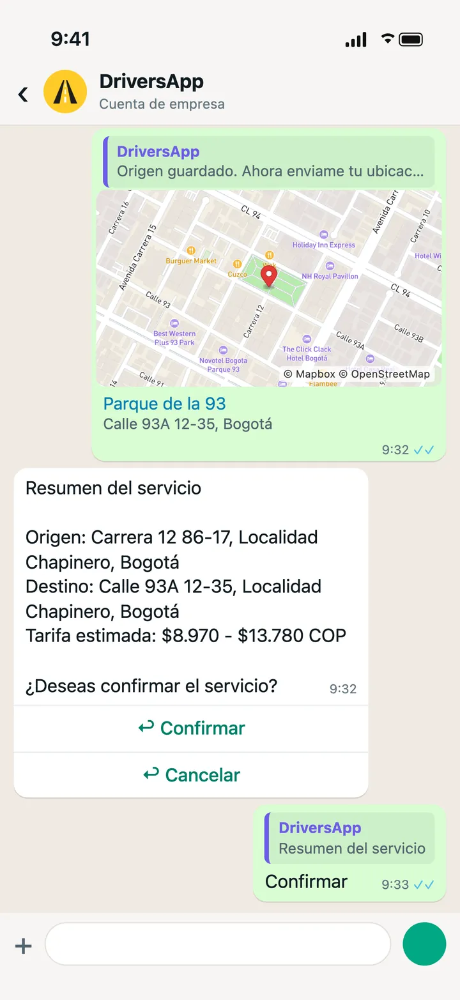
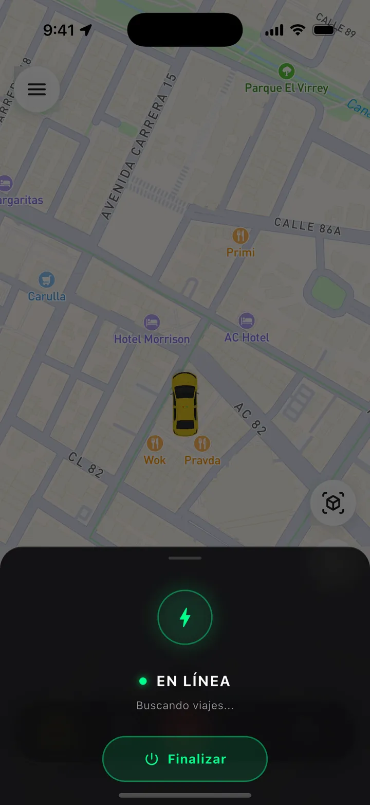
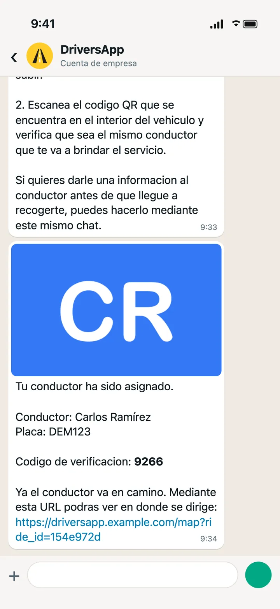
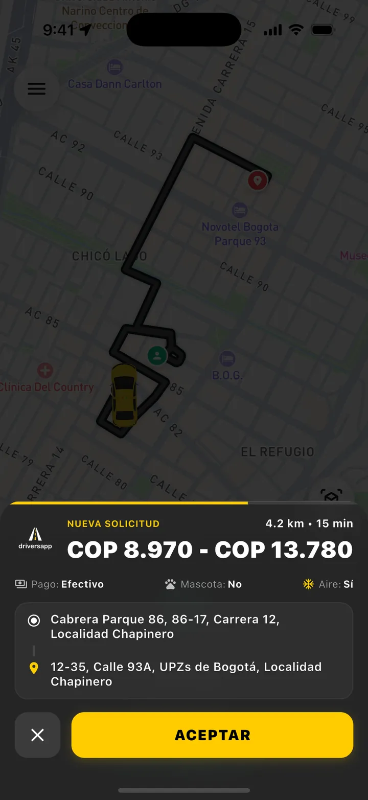
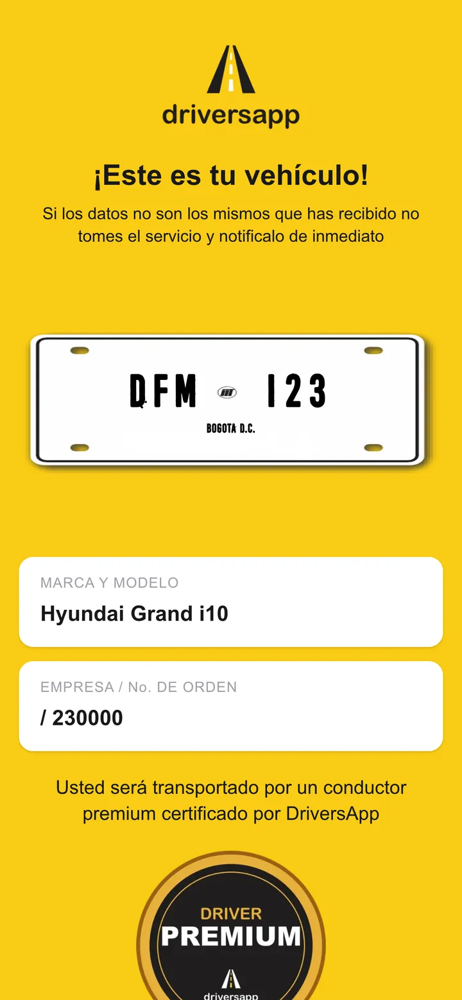
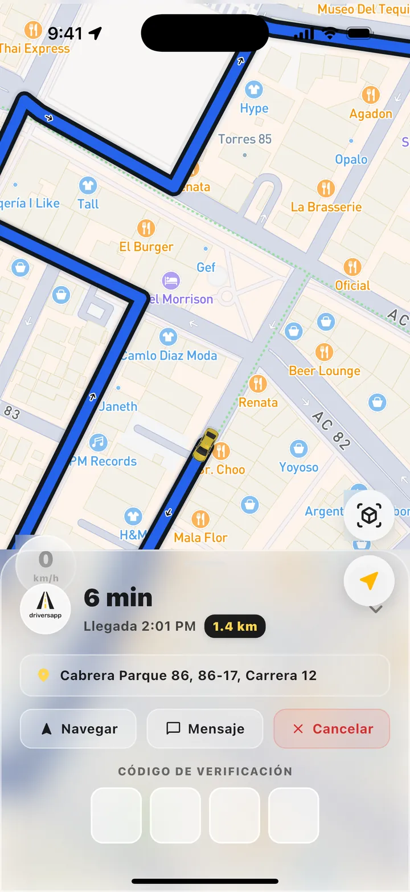
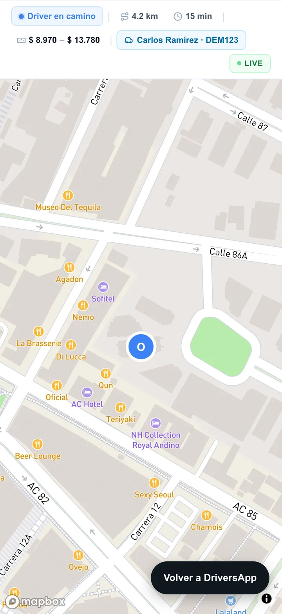
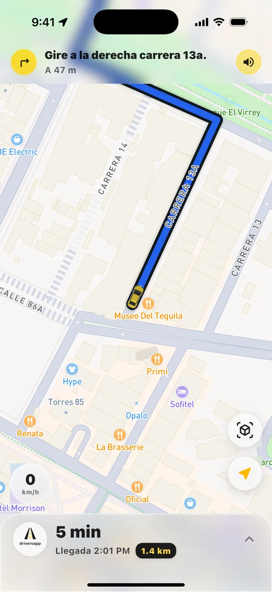
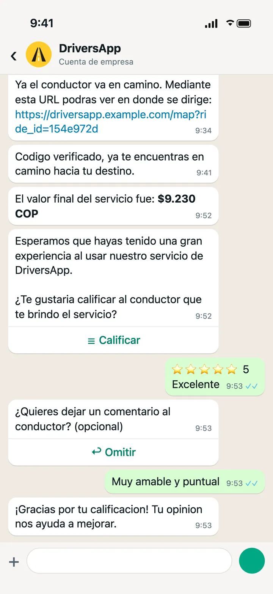
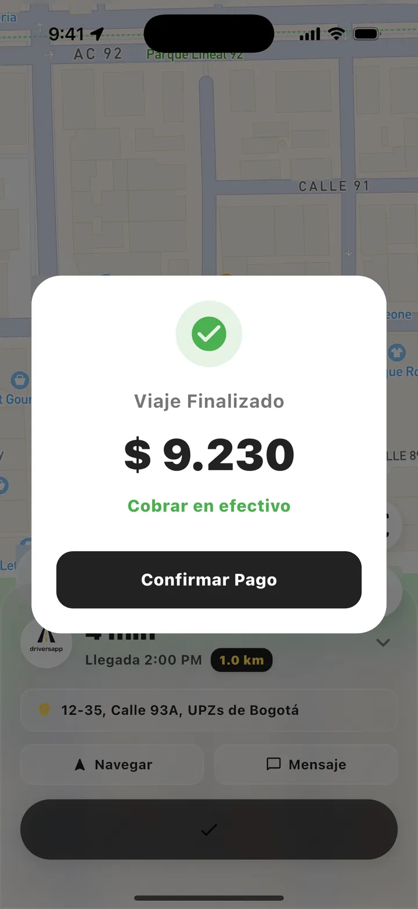

Caso de estudio · Full stack
DriversApp
Plataforma de transporte para conductores de taxi en Bogotá: app móvil, API, panel de administración y web pública.
Hecho por @StephanSuarez y @jhonatandgomez
Qué resuelve
Solicitudes por WhatsApp
El pasajero pide el viaje en un chat; la API lo cotiza y busca un conductor disponible.
Viajes en tiempo real
Oferta al conductor, navegación paso a paso, código de verificación y cobro.
Registro con IA en el teléfono
OCR de documentos, detección de rostro y validación de fotos del vehículo con ML Kit.
Membresías con pagos
Suscripción de los conductores con checkout y webhook de Wompi.
Cómo funciona un viaje
Cinco momentos de un mismo viaje: lo que ve el pasajero, lo que ve el conductor y lo que hace el sistema.
-
1
El pasajero pide el taxi
Comparte su origen y destino por WhatsApp y confirma la tarifa estimada. El conductor está conectado, esperando viajes.
En el sistema: La API calcula la ruta y cotiza en unidades, con recargos nocturnos, festivos y de aeropuerto.

Pasajero · WhatsApp 
Conductor · App -
2
Un conductor acepta
El conductor ve la ruta, la distancia y el precio, y acepta. Al pasajero le llegan el nombre del conductor, la placa y un código.
En el sistema: La oferta pasa de un conductor disponible al siguiente, con un minuto para responder. Ese estado vive en Redis.

Pasajero · WhatsApp 
Conductor · App -
3
Recogida verificada
El pasajero escanea el QR del taxi para confirmar placa y conductor. El conductor ingresa el código que recibió el pasajero.
En el sistema: El código de 4 dígitos se genera al asignar el viaje y la API lo valida antes de iniciarlo.

Pasajero · Web 
Conductor · App -
4
Camino al destino
El conductor navega paso a paso. El pasajero sigue el taxi en vivo desde el enlace del chat.
En el sistema: La app envía su ubicación GPS cada pocos segundos y la web la consulta periódicamente.

Pasajero · Web 
Conductor · App -
5
Pago y calificación
Al llegar, el conductor cobra en efectivo y ambos se califican.
En el sistema: El valor final se calcula con la distancia y el tiempo real del viaje; las calificaciones actualizan el promedio de cada uno.

Pasajero · WhatsApp 
Conductor · App
Las pantallas de WhatsApp son una recreación con los mensajes reales del bot. Todos los datos son de demostración.
Panel de operación
El equipo valida conductores y vehículos, ajusta las tarifas y gestiona las membresías desde la web.
{kind=link}
{kind=link}
{kind=link}
{kind=link}
Arquitectura
- Bases separadas por dominio: usuarios, viajes y clientes, cada una con sus migraciones.
- Estado en tiempo real en Redis: conductores disponibles, ofertas y códigos de verificación.
- Asignación por turnos: la oferta pasa de un conductor disponible al siguiente, con un minuto para responder.
- Chat del viaje: WebSocket en la app del conductor y WhatsApp para el pasajero.